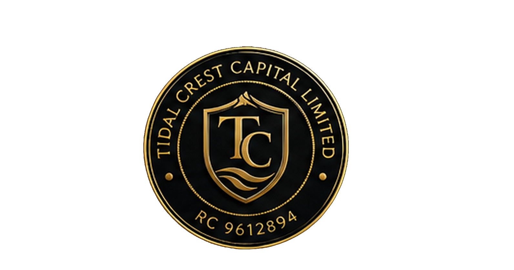

01
Stewardship
Ownership is a responsibility: protect what has been built while creating opportunities for those who follow.
For Tidal Crest, governance is not simply about managing today's enterprise. It is about ensuring that capital, responsibility and opportunity can be transferred successfully across generations.

Ownership is a responsibility: protect what has been built while creating opportunities for those who follow.
Investment decisions are guided by defined principles and responsible capital allocation.
Enduring family enterprises require structures capable of surviving changes in leadership and generations.
Success is measured by both outcomes and the strength of the institution transferred forward.
STEWARDS TODAY. BUILDERS FOR TOMORROW.
Our governance is not about control. It is about responsibility.